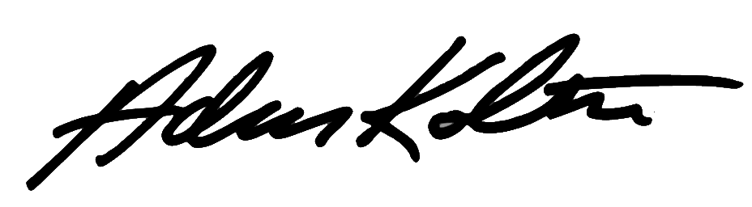

2017 Donation Impact Report
Last year, 2017, was one of the most challenging in our 25-year history with the Trump administration intent on undoing decades of Alaska conservation progress. It was also a year of transition for Alaska Wilderness League, as I took the reigns as executive director in mid-October, succeeding Cindy Shogan who led the organization so capably for the bulk of its history. The enormous threats notwithstanding, it was incredibly gratifying to return to the Alaska arena, fighting alongside such a talented staff and with so many of you who care deeply about the fate of these iconic lands and waters.
Even with passage of tax legislation last December – a bill that included a mandate for oil leasing in the Arctic National Wildlife Refuge – I remain optimistic about our ability to protect this last great wilderness. Because of the passion and generosity of donors, members and supporters like you, we are already setting the stage to block drilling and restore protections for the Arctic Refuge. Your donations, your engagement and your support have strengthened our resolve and commitment. We will not rest, we will not yield and we will not forsake for a moment our responsibility to defend the Arctic Refuge and other irreplaceable, iconic and deeply cherished Alaska land and waters.
Thank you for being part of the Alaska Wilderness League family, for caring about Alaska’s awe-inspiring wildlife, its majestic landscapes and the indigenous people who depend on them. Thank you for giving us the privilege of working for your conservation interests. Moreover, thank you for making it possible for us to do what we do each day.
Here’s a snapshot of how we put your generous donations to work in 2017 along with a quick status update on these vital campaigns.
Arctic National Wildlife Refuge
Unique political circumstances led to the inclusion of an Arctic Refuge leasing provision in December 2017 tax legislation, and yet, the national support for protecting the Arctic Refuge leading up to this unfortunate event will carry forward as our fight continues to restore protections for its “biological heart” – the 1.6 million-acre coastal plain. In 2017, your dollars enabled us to:
- Block efforts to exempt Arctic Refuge drilling from several major bedrock environmental laws, including the Endangered Species Act and the National Environmental Policy Act.
- Strengthen, diversify and re-energize the coalition of organizations working to protect the Arctic Refuge, including groups ranging from the Garden Club of America, to leading faith denominations, to scores of outdoor retailers and athletes, to hunting and angling groups.
- Secure opposition from more than a dozen Republican members of Congress as well as Republican luminaries including former Governor of New Jersey and head of the 9/11 Commission Tom Kean, as well as former EPA administrators William Ruckelshaus, William K. Reilly and Christine Todd Whitman.
- Garner 125 House and 40 Senate co-sponsors of legislation that would permanently protect the coastal plain of the Arctic Refuge.
- Elevate the voices of hundreds of Alaskans who support the Arctic Refuge, from guides and outfitters to scientists and Alaska Natives.
- Generate more than 70 letters to the editor and op-eds in a dozen target states as well as several network news stories and features in outlets including the New York Times, Washington Post, USA Today and National Public Radio.
- Partner and support our Gwich’in Athabaskan allies by flying their tribal leadership and others to Washington, D.C., throughout the 2017 tax bill fight to visit more than 100 congressional offices.
- Catalyze millions of social media, on-line and other actions for the Arctic Refuge, as well as several Capitol Hill rallies and district-level events across the country.
Current Status (October 2018): Legislation to restore protections has been introduced, nearly 700,000 initial comments against the Trump leasing plan secured, our legal team is preparing to go to court to fight seismic exploration, and $2.5 trillion worth of investors have stepped forward urging oil companies to stay out of the Arctic Refuge.
Arctic Ocean
During the Obama administration, Alaska Wilderness League and its allies not only successfully worked to press Shell Oil to back away from its Arctic Ocean drilling plan, but secured new protections for much of the Chukchi and Beaufort seas. This was a major victory for Alaska’s coastal communities, as well as the polar bears, whales, seals and other wildlife that call the Arctic Ocean home. However, in 2017, Interior Secretary Ryan Zinke and the Trump Interior Department launched an effort to advance leasing off of every U.S. coastline, including the Arctic. In 2017, your donations enabled us to:
- Challenge the Trump administration’s May 2017 actions to undo permanent withdrawals from new leasing in the Arctic Ocean.
- Foster bipartisan opposition on Capitol Hill to the administration’s offshore drilling plans while increasing support for proactive Arctic Ocean protection legislation by 55% in the House.
- Delivered 19,000 member comments opposed to new offshore drilling in the Arctic Ocean during the 5-year plan comment period and catalyzed testimony and comments from thousands of concerned citizen.
Current Status (October 2018): The League joined with other NGO and native interests in a lawsuit challenging President Trump's decision to overturn an Executive Order from President Obama protecting 125 million acres of the Arctic Ocean. And, we joined an appeal of the Bureau of Safety and Environmental Enforcement’s (BSEE) decision to withhold the majority of two Freedom of Information Act (FOIA) requests for documents related to Arctic Ocean lease holdings.
America's Largest Rainforest
One of Alaska Wilderness League’s major conservation victories during the Obama administration was the adoption of a new Land and Resource Management Plan Amendment in 2016 that afforded better protections for the Tongass National Forest and the wildlife and local economies that depend on a healthy forest. This amendment paved the way to transition Southeast Alaska away from old-growth logging to the benefit of sustainable industries like recreation, tourism and fishing. In 2017, your generous support and contributions also enabled us to:
- Block efforts to exempt the Tongass from the National Forest Roadless Area Conservation Rule – or Roadless Rule – or otherwise weaken the Tongass Land Management Plan.
- Educate decision-makers about the extraordinary values of the Tongass including its world-class salmon runs, brown bear habitat, and its position as an engine for tourism, hunting, angling and outdoor recreation. This included more than 50 congressional meetings, many conducted alongside our Alaska-based partners and allies.
- Engage and deepen coalition support for the Tongass, securing, for example, 82 groups standing together to oppose Tongass “budget riders” in the Interior Department appropriations legislation.
- Inspired more than 9,000 member actions in favor of sustainable Tongass management.
- Set the stage for the release of a new land management plan for the Chugach National Forest through key stakeholder, scientist and U.S. Forest Service engagement. We also assisted in the planned release of a new book from League board member and author Debbie Miller, displaying the wild expanse of more than two million acres known as the Nellie Juan-College Fjord Wilderness Study Area.
Current Status (October 2018): Alaska Wilderness League has continued to block legislative attempts to exempt Alaska’s national forests from the Roadless Rule, however, language is still being negotiated on the final 2018 Interior appropriations bill and farm bill. Concurrently, the Forest Service has launched a new process to exempt the Tongass administratively through a rulemaking process initiated by a request from the State of Alaska. We are mobilizing both Alaska and national opposition. Finally, we have gone to court to challenge a timber sale on Kuiu Island in the Tongass that challenges the Forest Service’s environmental analysis of a sale that would wipe out 523 acres of old growth forest.
Protections Throughout Wild Alaska
In other areas of Alaska, the League continued to fight for new protections and defend the victories achieved during the Obama administration, while preparing for mounting threats posed by a new presidential administration. A few highlights made possible by the support of our donors were:
- National Petroleum Reserve-Alaska: For this area of the Western Arctic, the League continued to lead lobbying efforts in D.C., and helped secure a witness to testify at a congressional hearing against threats to some of the most vital biological and subsistence resources in the area including places like Teshekpuk Lake.
- Pebble Mine: We mobilized over 12,000 people to oppose the development of this massive open pit mine in Southwest Alaska. In the end, even the Trump administration refused to withdraw an Obama-era watershed assessment that identified substantial risks to Bristol Bay if it moves forward.
- Izembek National Wildlife Refuge: By monitoring the Trump administration as it cut corners in their attempts to trade away designated wilderness to allow for a questionable road project in 2017, the League paved the way to join litigation in January 2018 seeking to undo this shady deal.
Financial Highlights
| Alaska Wilderness League Revenue | 2017 ($) | 2016 ($) |
|---|---|---|
| Foundations | 1,650,000 |
2,030,000 |
| Individuals & Corporations | 1,264,275 | 1,086,149 |
| Other Revenue | 187,923 | 269,603 |
| Total Revenue | 3,102,198 | 3,385,752 |
| Alaska Wilderness League Net Assets | 2017 ($) | 2016 ($) |
|---|---|---|
| Unrestricted Net Assets | 2,103,409 |
1,480,231 |
| Temporarily Restricted Net Assets | 180,458 | 1,540,000 |
| Total Net Assets | 2,283,867 | 3,020,231 |
| Total Liabilities and Net Assets | 2,823,933 | 3,106,361 |
We spend 72% on programs so you know every dollar counts!
Our Mission
Alaska Wilderness League galvanizes support to secure vital policies that protect and defend America’s last great wild public lands and waters.
- A huge thank you to donors like you who make this work possible, including our 2017 Wild Society.
- To learn more about our Board and Staff, please visit our Board of Directors page as well as our Staff listing. Don’t hesitate to reach out if you have any questions!